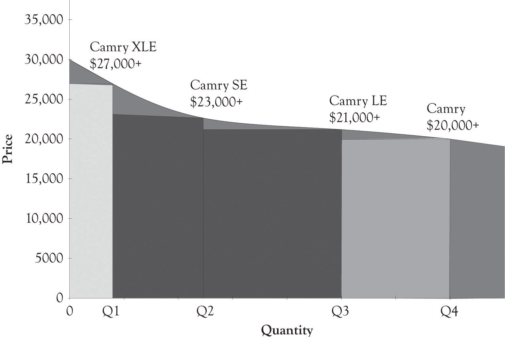
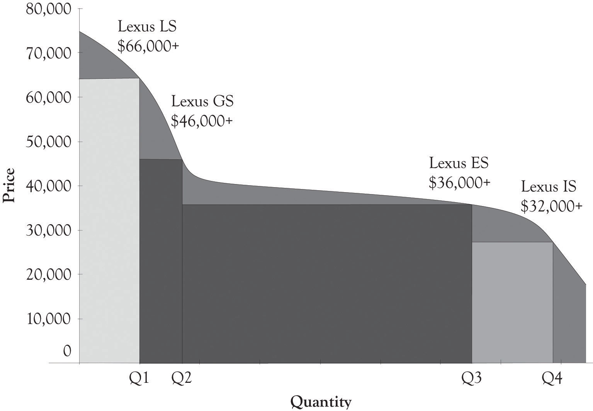

Figure 5.1 "PD Curves for Toyota Passenger Cars" illustrates a PD curve for Toyota cars that uses sales estimates from 1 month projected to a year. This PD curve also illustrates that demand curves are rarely linear and this is particularly true at the high end and low end of the demand curve for Midas and Hermes versions. It is difficult to obtain precise sales data and the graph should be used to understand how Toyota differentiates their cars and not to illustrate actual sales figures for the company. This is true in many of the graphs used in the book. There are other products in the company’s lineup, but these are their primary products for the Midas, Atlas, and Hermes customers. Within each line, there is also product differentiation. Figure 5.2 "PD Curve for Camry" illustrates the product price and product differentiation for the Camry line.
Toyota actually has another high-end product, the Lexus line. This line is actually more luxurious than the Toyota Avalon model and appeals to individuals at the highest income levels. The PD curve in Figure 5.3 "PD Curve for Lexus Sedan" illustrates that there is also Midas, Atlas, and Hermes versions for the Lexus sedans. The width of the Lexus ES quantity reflects the fact that the ES sedan dominates Lexus sedan sales. The top of the line for the Lexus sedans can be found in the hybrid cars. The Lexus hybrids start around $45,000 and scale all the way up to around $120,000 for a fully loaded LS hybrid.
Figure 5.1 PD Curves for Toyota Passenger Cars

Figure 5.2 PD Curve for Camry
Figure 5.3 PD Curve for Lexus Sedan
Figure 5.4 PD Curve for Engine Technologies

Motor technologies can also be placed on PD curves. Figure 5.4 "PD Curve for Engine Technologies" illustrates that combustion engines are at this time occupying the lower end of a PD curve. However, the hybrid cars that involve both internal combustion and electrical components are emerging as mass-appeal technologies. The hydrogen fuel cell autos and pure electric cars occupy the high end of the PD curve.